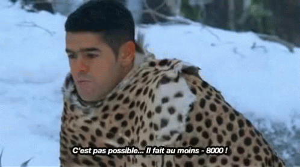

Icebreaker
Vous entrez dans le marché. Vers quel stand allez vous en premier ?
0 votes
27 Octobre - 24 Novembre 2025

Vous entrez dans le marché. Vers quel stand allez vous en premier ?
0 votes
Vers quel stand allez vous en premier ?
0 votes au total
Le ventre plein 🤤, le porte monaie-vide 💸, vous décidez de faire un tour de grande roue. D'en haut, vous pouvez voir tous les stands du marché.
Quels sont les stands que vous aimeriez revoir la prochaine fois ?
#OnGarde
Un peu mal au bide, la nouvelle écharpe qui gratte... et la chute sur la glace qui fait mal aux fesses !
Quelles sont les stands que vous éviterez la prochaine fois ?
#OnRetire
Un Cécémel évidemment...
Vous êtes rentré(e) chez vous, dans le canapé avec un plaid. Cependant, vous paniquez un peu car vous n'avez pas trouvé le cadeau idéal pour votre Secret Santa Kimple.
Quels stands espérez-vous trouver la prochaine fois ?
#OnAmélioreOuAjoute